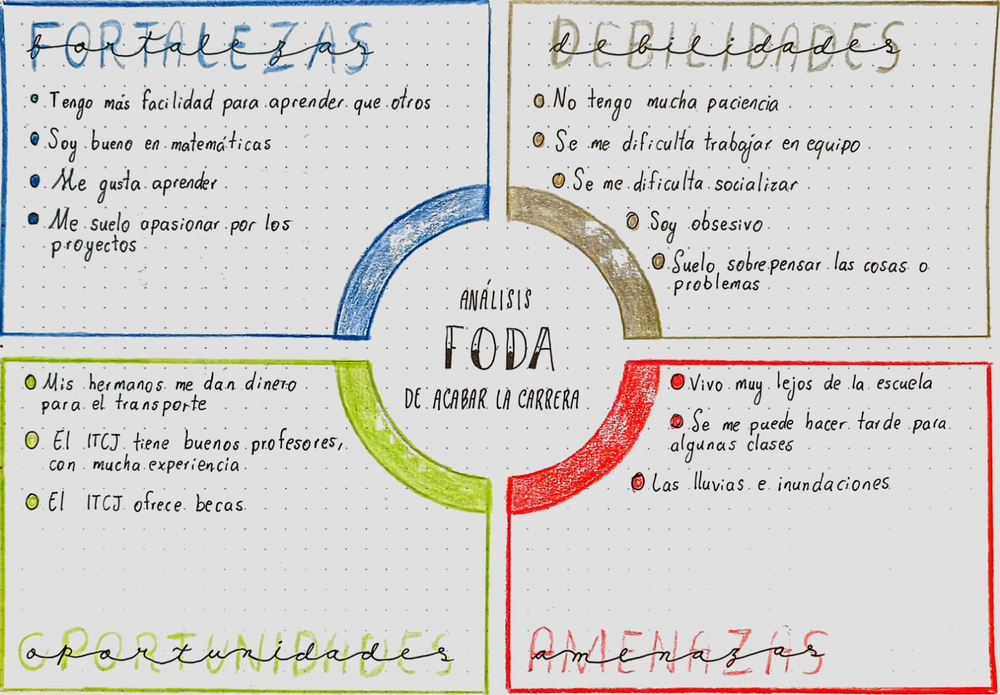

Portafolio de Evidencias
¿Qué es lo que espero del ITCJ?
Mi nombre es Edgar Pablo Lopez y provengo del CBTis 128, estudie programación por que me metí en la carrera de Ingeniera en Sistemas computacionales en ITCJ. Por lo que espero aprender mucho de mi carrera, he escuchado que tiene muy buenos profesores que más que enseñar por ganar dinero, lo hacen por la pasión de dar clases, de transmitir sus conocimientos y experiencias, espero enfrentarme pequeños retos que pongan a prueba mis conocimientows adquiridos, proyectos que me hagan esforzarme y desarrollar mis habilidades. Espero conocer muchas personas, personas que me ayuden a aprender, que me enseñen nuevos conocimientos a través de sus experiencias y de sus conocimientos, espero hacer grandes amigos.
Análisis FODA de acabar la carrera
¿Por qué quiero estudiar?
Quiero estudiar por que es algo que me gusta, me ayuda a crecer de manera intelectual, a adquirir nuevos conocimientos, a superarme a mi misno, quiero estudiar para poder tener mi titulo de Ingeniero. Quiero obtener un mejor puesto de trabajo con un mejor salario, un puesto de sisteams o programación, un trabajo relacionado con mi carrera, porque elegí esta carrera por que me gusta, al trabajar de algo que me gusta espero no batallar mucho o llegar a tener una alineación de mi trabajo. Quiero estudiar porque es una aventura que te lleva a muchos caminos, muchas oportunidades, experiencias tanto buenas como malas, pero sobre todo te ayuda a adquirir nuevos conocimientos.